EKS & Platform Engineering Lab
A production-grade reference architecture demonstrating how a real platform team designs, provisions, secures, deploys, observes, and operates infrastructure.
Want the narrative version? Read the build-story blog — the plan, the bugs, and the fixes across sessions 1–6.
01Purpose
This is not “deploy Kubernetes and call it a day.” It is the full operational picture an internal platform team would actually own:
- Multi-environment AWS infrastructure provisioned by Terraform with a remote backend, KMS, IRSA, OIDC, NAT egress, multi-AZ private subnets.
- A complete in-cluster platform layer: ingress, DNS, TLS, secrets, scaling, policy, observability, tracing, logging, backup, cost.
- Pull-based GitOps via ArgoCD with app-of-apps, sync waves, ApplicationSets.
- CI/CD via GitHub Actions reusable workflows authenticated via OIDC.
- Policy-as-code (Kyverno cluster-level, Checkov in CI).
- A layered phase model that intentionally delays complexity until earlier layers are stable.
Audience: the author’s portfolio. Demonstrates architect → build → debug → operate — not just “wrote Terraform.”
02Design Principles
Layer-by-layer build order
Layer 5 Agentic / Self-Service ← agents/, platform-services/ Layer 4 Reliability / FinOps ← reliability/, finops/ Layer 3 Security / Observability ← security/, observability/ Layer 2 Workloads + GitOps ← kubernetes/, gitops/, cicd/ Layer 1 Infrastructure (cloud) ← infrastructure/
A failure at layer N is never fixed by changing layer N+1. The dependency direction is strictly downward.
Iterative apply cadence (Directive 02)
implement → local lint → apply to dev → validate → fix → destroy → next sprint. Never more than one sprint sits “implemented but unapplied.” Monolithic-first hides bugs; layer-by-layer surfaces them in 25-file chunks.
No long-lived credentials
- GitHub Actions → AWS via OIDC
AssumeRoleWithWebIdentity - In-cluster controllers → AWS via IRSA, never node-role
- App secrets → External Secrets Operator pulling from AWS Secrets Manager
Production-realistic, not flashy
Boring tech preferred over novel. Multi-env (dev → staging → prod) overlays from day one, not bolted on later. Domains are top-level directories the way a real platform org would structure them.
03Phase Model
| Phase | Name | What ships | Layers |
|---|---|---|---|
| ✓ 1 | MVP | VPC, EKS, ingress-nginx, cert-manager, ExternalDNS, ArgoCD self-managed, Prometheus + Grafana + Loki, Kyverno baseline, Trivy/Checkov CI | 1–3 |
| ✓ 2 | Reliability | OpenTelemetry, Tempo, Velero, OpenCost, chaos engineering, DR drills | 3↑, 4 |
| 3 | Internal Platform | Backstage, self-service templates, golden paths | 5 |
| 4 | Agentic | LangGraph orchestration, intent parser, Terraform generation, FinOps-aware planning | 5 |
Intentionally skipped in Phase 1: multi-region, GPU pools, service mesh, Tempo (originally), Falco (originally), advanced OPA, ephemeral envs.
04Phase 1 / 2 Architecture
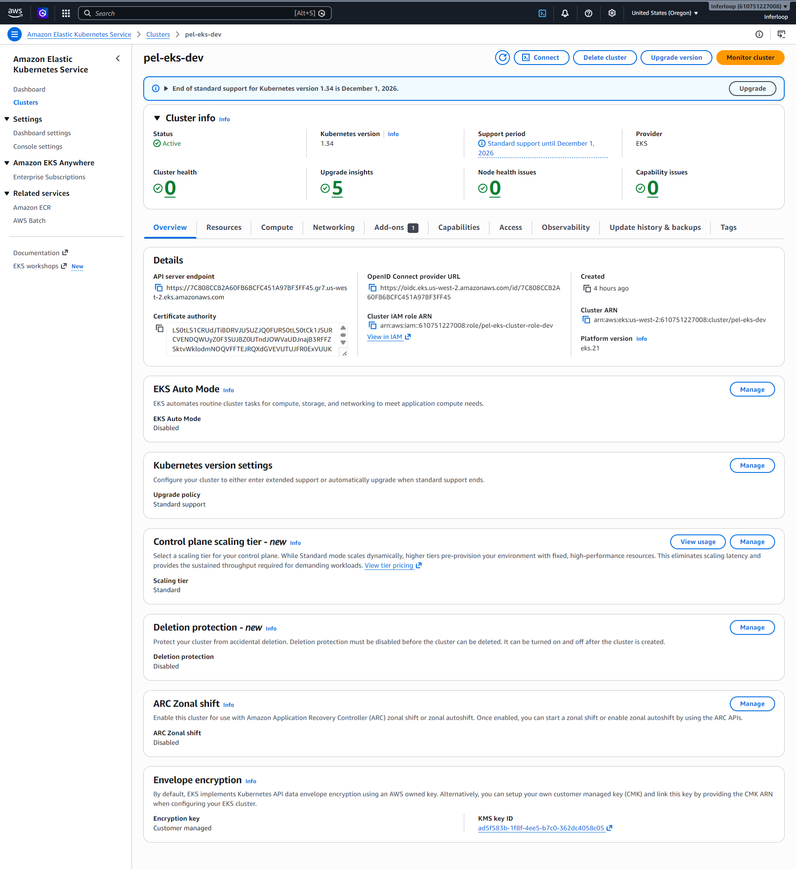
pel-eks-dev on v1.34, 2 × m6i.large nodes across 2 AZs.NLB (ingress-nginx)
private subnets ← NAT GW(s) → nodes
app-of-apps
ApplicationSets
self-managed
aws-load-balancer-controller
cert-manager
external-dns
external-secrets
metrics-server
goldilocks
Prometheus → EBS
Grafana
Loki → S3
Tempo → S3
OTel Collector
Pyrra (SLO ops)
Alertmanager
AWS console — the EKS surface

pel-eks-dev on v1.34, standard-support window through Dec 2026.
start-instance-refresh when AMIs roll.
kubectl get nodes, 3×m6i.xlarge spread across AZs.
maxPods after the prefix-delegation fix.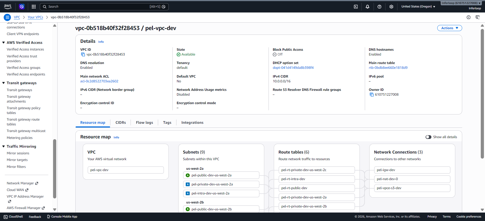
VPC
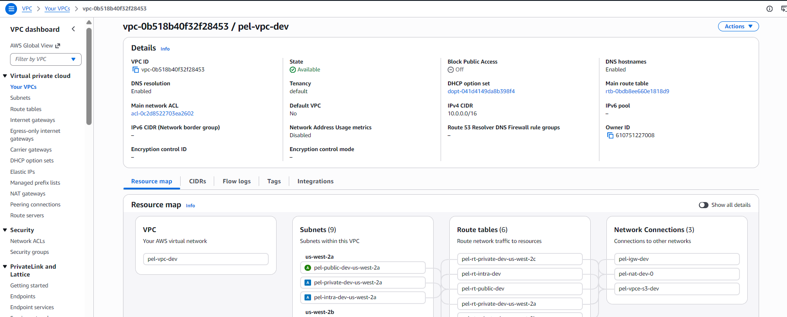

us-west-2a/b/c.


pel-eks, pel-ebs, pel-s3, pel-secrets); the EBS key holds the kms:CreateGrant conditional we needed for node joins.VPC 10.0.0.0/16
3 AZs (us-west-2a/b/c) · public/private/intra subnets per AZ. Nodes have no public IPs; egress via NAT only.
EKS pel-eks-dev · v1.34
Private nodes (2× m6i.large). Public endpoint CIDR-restricted to operator IP. KMS-encrypted EBS root volumes.
IRSA + OIDC
Every controller has a dedicated IAM role assumed via the cluster’s OIDC provider. Three GHA roles: plan, apply, ecr-push.
IRSA web
| Role | AWS API access |
|---|---|
pel-irsa-aws-lbc-dev | ELBv2, EC2 SG ops |
pel-irsa-ebs-csi-dev | EBS volume lifecycle |
pel-irsa-external-secrets-dev | Secrets Manager, SSM |
pel-irsa-loki-dev | S3 (Loki chunks) |
pel-irsa-cluster-autoscaler-dev | ASG describe/scale |
pel-irsa-falcosidekick-dev | SNS / EventBridge |
pel-irsa-arc-runners-dev | ECR push, S3 cache |
05Component Catalog
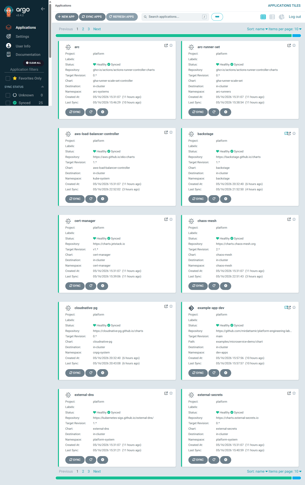
ArgoCD — the GitOps brain
App-of-apps pattern: root-dev references every other Application + ApplicationSet. ArgoCD self-manages — after the initial Helm bootstrap, the cluster reconciles ArgoCD onto itself. CRDs in sync wave -1, controllers in 0, workloads in +1 prevents controller-vs-CRD races. Insecure mode (server.insecure: true) lets ingress-nginx terminate TLS.
ingress-nginx + AWS Load Balancer Controller
L7 ingress via ingress-nginx behind NLB (pel-nlb-dev) provisioned by LBC from the controller’s Service type=LoadBalancer. LBC’s IRSA role needed explicit EC2 SG perms (CreateSecurityGroup, Authorize/RevokeSecurityGroupIngress) — discovered as a problem in session 2 (commit 623b00d).
cert-manager
TLS for every Ingress (Let’s Encrypt) and internal webhook certs (replaced kube-prometheus-stack’s hand-rolled cert-init jobs in commit e950329). This introduced a circular dependency with kube-prometheus-stack — see Problems §6.6.
kube-prometheus-stack
Prometheus Operator bundle: Prometheus + Alertmanager + Grafana + node-exporter + kube-state-metrics + the monitoring.coreos.com CRDs. Grafana dashboards pre-provisioned from git. CPU request reduced to 100m (commit d650cf9) so it fits on a 2-node m6i.large dev cluster. Uses gp3 EBS — and the SC does not auto-create, so post-bootstrap step always.
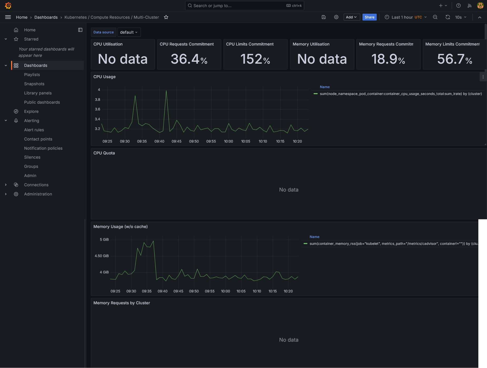
Loki + Tempo
Cheap by design: index labels only, store chunks/traces in S3 (pel-loki-). IRSA-scoped S3 access. Tempo joined in Phase 2; Phase 1 was metrics + logs only.
OpenTelemetry Collector
Receives OTLP/gRPC from apps; routes metrics → Prometheus remote-write, logs → Loki, traces → Tempo. Apps stay vendor-neutral.
Kyverno
Admission controller via CRDs (no Rego). Phase 1 baseline: pod-security-restricted, require-resource-limits, disallow-host-namespaces, disallow-privileged. Falco complements at runtime, not admission.
OpenCost
Joins AWS CUR + Kubernetes metadata for per-namespace daily spend. Probably the single most reviewer-impressive screenshot in the entire lab.

Velero
Cluster manifests + EBS snapshots → S3. Pre-install hook runs a CRD-upgrade Job; the kubectl init image had to be pinned to bitnami/kubectl:1.32 because the chart’s default was floating (commit 1903081).
External Secrets Operator
Replaces the “Secrets in git” anti-pattern. SecretStore per region; ExternalSecret CRs declare which Secrets Manager keys to mirror.
GitHub Actions Runner Controller (ARC)
ARC + arc-runner-set = ephemeral runners as pods, scaled by webhook from GitHub. ECR push via IRSA. Operationally lives in the platform layer because every team reuses it.
06Problems & Solutions
Real incidents from _project-docs/sessions/. Each is a story of root cause → fix → lesson.
6.1 — Phase 0 state was on local disk
data "terraform_remote_state" "phase0" returned empty.backend "s3" block in phase-0-baseline/versions.tf. Bootstrap created the S3 bucket but never used it.backend "s3" blocks to both phases, ran terraform init -migrate-state.6.2 — EKS 1.31 in extended support (+$0.10/hr)
InvalidParameterException: kubernetes version "1.31" is only supported under extended supportaws eks describe-cluster-versions before pinning.6.3 — GitHub OIDC provider already existed (shared account)
EntityAlreadyExists: Provider with url https://token.actions.githubusercontent.com already existsmodules/iam-github-oidc/main.tf to data "aws_iam_openid_connect_provider" instead of resource. Consume, don’t own.data lookups for any globally-unique AWS resource.6.4 — SG rule descriptions with invalid characters
a-zA-Z0-9 . _ - : / ( ) # , @ [ ] + = & ; { } ! $ * and spaces. Tried → (rejected), -> (rejected: > banned), finally to (worked).6.5 — EBS KMS key missing kms:CreateGrant
Client.InvalidKMSKey.InvalidState → NodeCreationFailure: Instances failed to join the kubernetes cluster.kms:CreateGrant on the key. Policy only granted Decrypt/Encrypt; ASG retried 10× then gave up. Error pointed at “key state” not policy — misleading.kms:GrantIsForAWSResource = true + aws:PrincipalAccount = self. Standard AWS pattern.CreateGrant first.6.6 — Helm pre-install hook bootstrap deadlock most instructive
monitoring.coreos.com/ServiceMonitor (CRD owned by kube-prometheus-stack which hadn’t installed); kube-prometheus-stack wanted to create cert-manager.io/Certificate + Issuer (CRDs owned by cert-manager which hadn’t installed); tempo had the same SM problem; argocd’s Ingress was rejected by LBC because IngressClass nginx didn’t exist — ingress-nginx hadn’t installed.0c36ca3). cert-manager installed → cert-manager CRDs available → kube-prometheus-stack installed → CRDs for SM available → re-enable SM in follow-up sync.6.7 — Smaller fixes (session 2)
| Commit | Issue |
|---|---|
1cbcd63 | Scale scripts referenced old NG names; corrected to pel-ng-*-dev |
aea3cee | ingress-nginx replicaCount too high for 2-node dev; pinned to 1 |
1903081 | Velero pre-install kubectl image floated; pinned bitnami/kubectl:1.32 |
9c9878d | Observability AppSet needed Replace=true for large Prometheus CRDs |
c4d7018 | Replace=true re-bound bound PVCs on resync; removed |
3c92a83 | ARC required controllerServiceAccount set explicitly |
d53b909 | ArgoCD Service set to LoadBalancer in Helm values (was hand-patched) |
6.8 — The gp3 StorageClass gotcha
gp2 is inherited; Phase 1 charts request gp3.gp3 SC manually post-bootstrap as a runbook step.6.9 — ArgoCD CLI vs port-forward fragility
argocd app sync repeatedly failed: “server address unspecified” or hung on gRPC handshake.--address 0.0.0.0 for cross-terminal use.kubectl -n argocd patch application <name> --type merge -p '{"operation":{"sync":{"prune":true,"syncStrategy":{"apply":{"force":true}}}}}'kubectl always works.07Operational Workflow
Fresh build (from zero)
terraform applyPhase 0 baseline (~5 min)terraform applyPhase 1 MVP (~30 min) — VPC, EKS, IRSAaws eks update-kubeconfig; verify 2 nodes Ready- Apply
gp3StorageClass manually make argocd-bootstrap ENV=dev- Re-apply GitHub PAT secret for ArgoCD repo access
make argocd-sync ENV=dev- Wait 5–15 min for all child Apps to reach Healthy
Teardown (cost discipline)
Per Directive 02, the cluster is destroyed at end of each sprint loop:
terraform destroyPhase 1 (~10 min)- Manually delete orphan ELBs / NLBs / EBS volumes (Helm-created LBs persist if Service objects aren’t deleted first)
- Phase 0 stays up (~$5/month for KMS + S3 + ECR + CUR delivery)
Cost reality
| State | Cost |
|---|---|
| Idle Phase 0 baseline | ~$5 / month |
| Active dev cluster | ~$3–4 per 12-hour day |
| Per-loop budget (Directive 02) | $5–25 AWS, $0–5 LLM, 2–6h wall-clock |
08Status Snapshot
2026-05-15, end of session 3.
| Domain | State | Notes |
|---|---|---|
| Phase 0 baseline | Applied + stable | S3, KMS aliases × 4, ECR × 5 |
| Phase 1 MVP | Applied | 100 TF resources, EKS v1.34, 2 × m6i.large |
| ArgoCD | Installed | App-of-apps wired up |
App-of-apps sync state
| State | Apps |
|---|---|
| Synced + Healthy | argocd core, cert-manager, kube-prometheus-stack, tempo, opencost, external-dns, external-secrets, LBC, chaos-mesh, goldilocks, arc, arc-runner-set |
| Healthy / OutOfSync (cosmetic) | metrics-server, kyverno |
| Progressing | falco |
| Unknown (controller pending) | loki, otel-collector, pyrra |
| Stuck | ingress-nginx (hook deadlock under investigation), velero (hook stuck), argocd app (Degraded — needs ingress-nginx first) |
Portfolio screenshots capture deferred until ingress-nginx + argocd are Healthy.
09Phase 1 Capture Gallery
One placeholder per screenshot called out in the sprint READMEs. Click a sprint header to expand. Drop a PNG at the path shown and reload — the slot auto-replaces its placeholder with the real image.
Phase 1 — MVP
Sprint 01 · Repo Bootstrap + Tooling
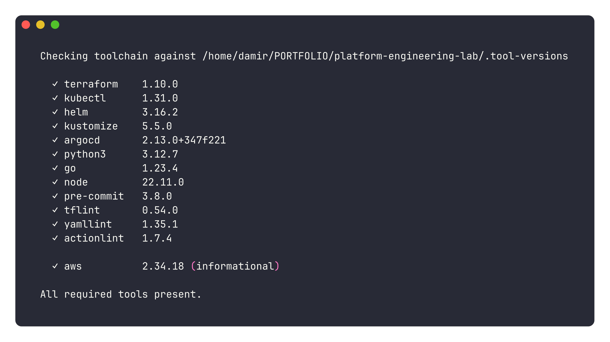
make bootstrap exit 0 with toolchain versions listed.Sprint 02 · Terraform Foundation
pel-vpc-dev with 3 AZs, 6 subnets.Sprint 03 · EKS Cluster + Node Groups
pel-eks-dev ACTIVE, k8s 1.34.
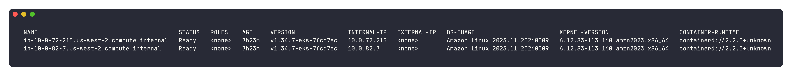
Sprint 04 · Cluster Bootstrap
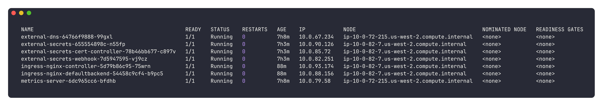
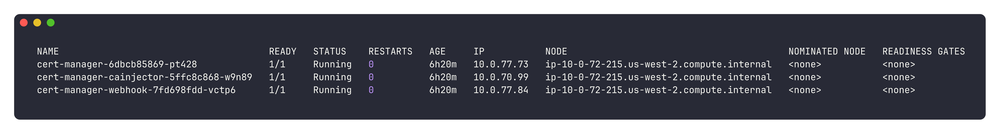
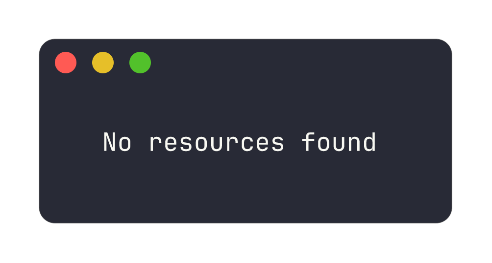
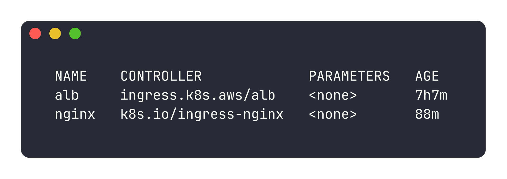
nginx IngressClass set default.Sprint 05 · GitOps with ArgoCD
root-dev tree, all AppSets + children.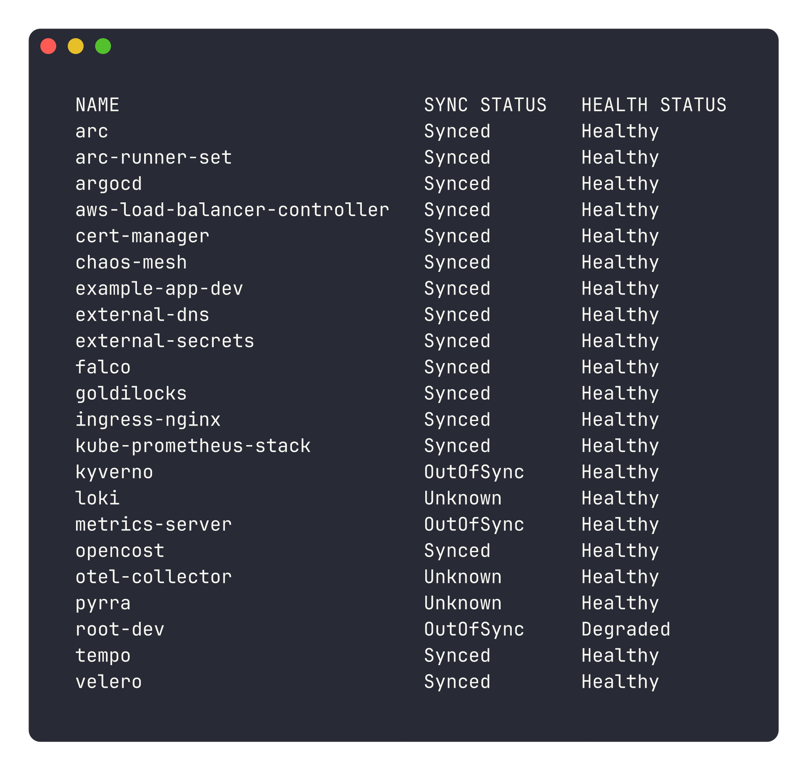

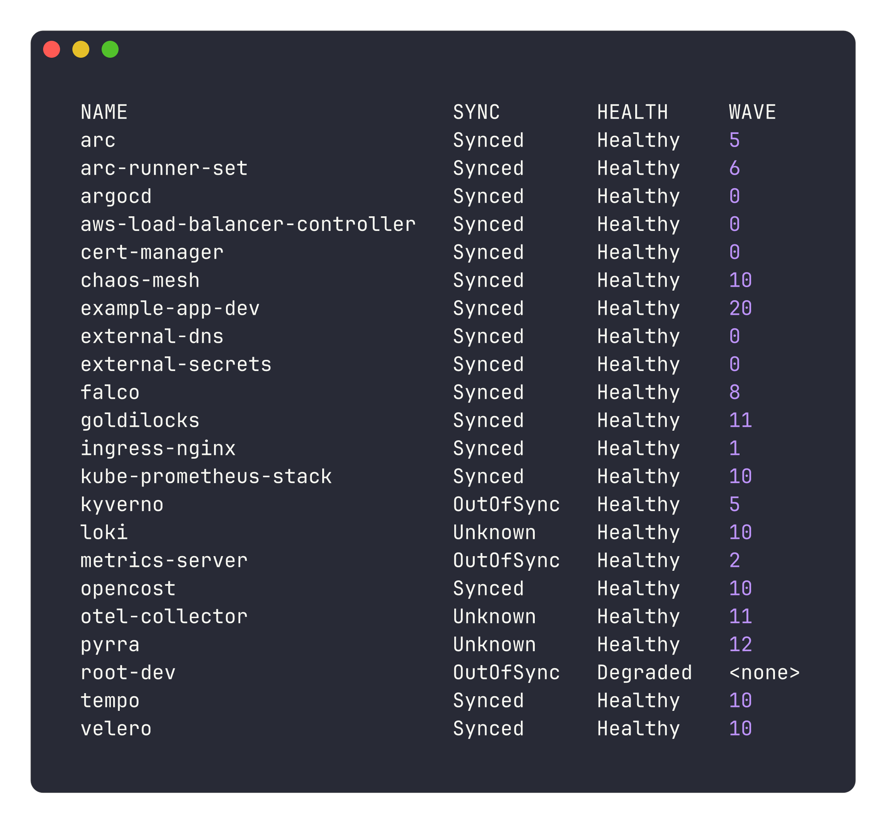
Sprint 06 · Observability Baseline
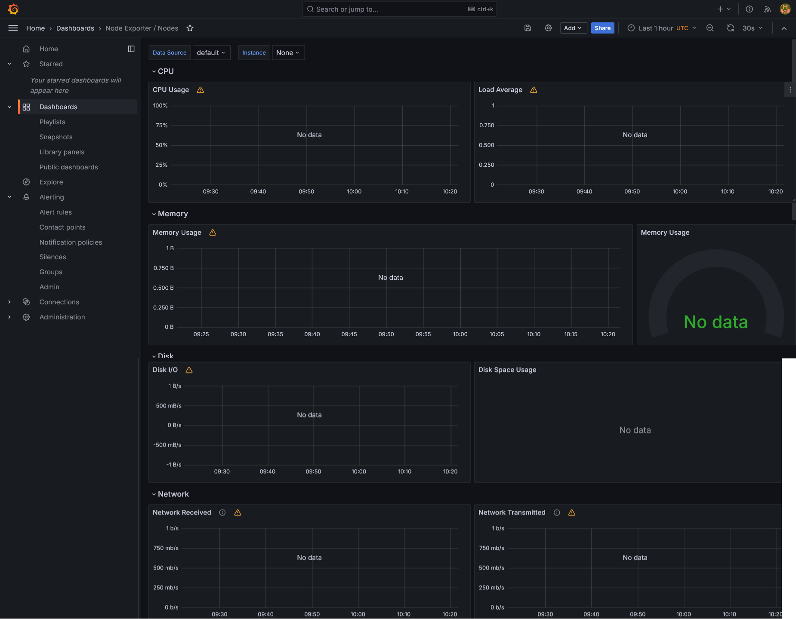


Sprint 07 · Security Baseline
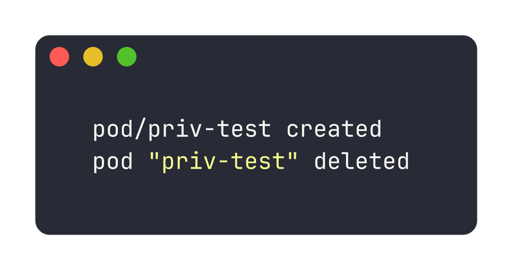
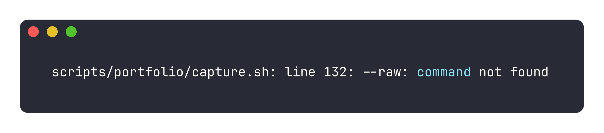


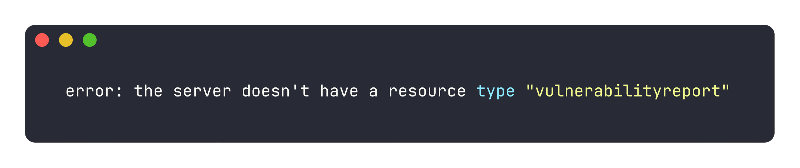
Sprint 08 · CI/CD Reusable Workflows
Sprint 09 · Microservice Demo End-to-End
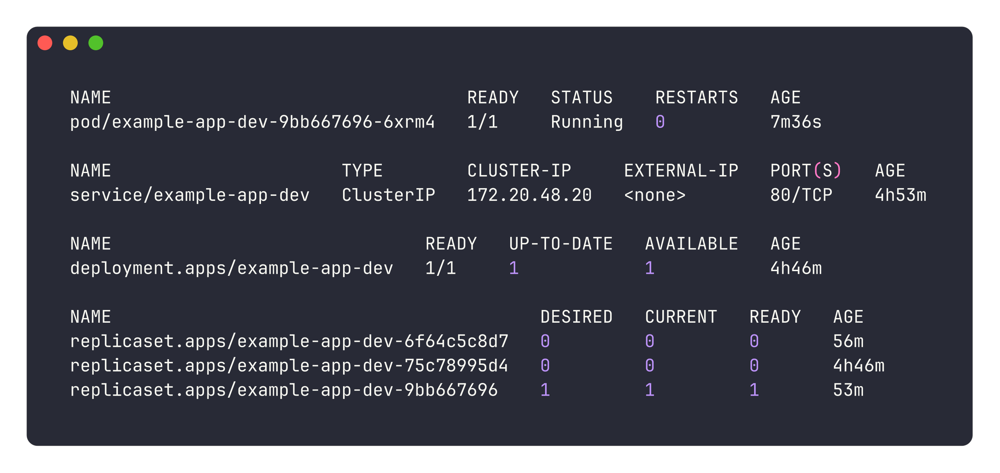